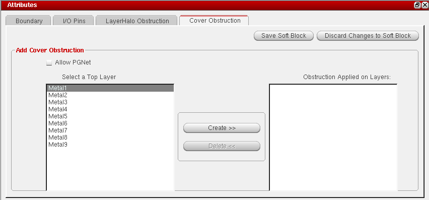
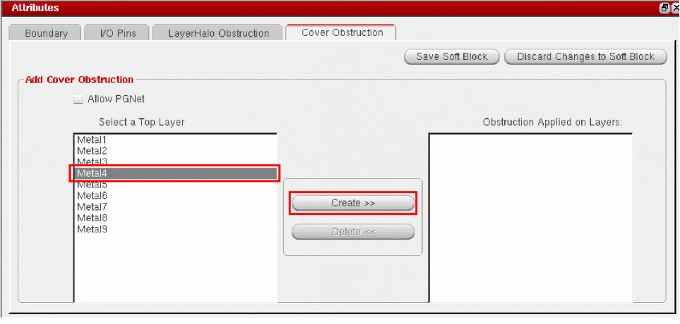
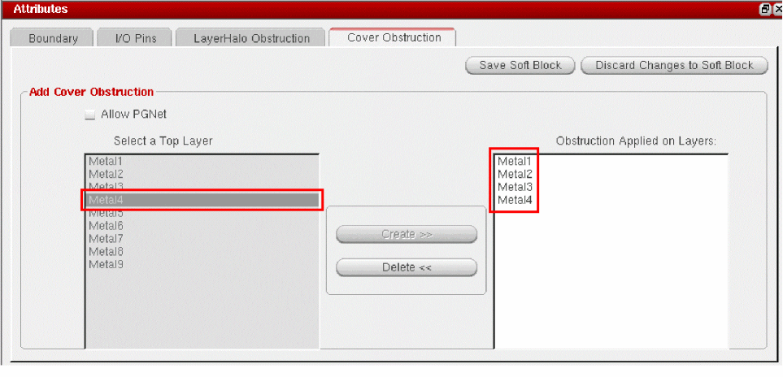

Specifying Cover Obstructions
You use the Cover Obstruction tab to create cover obstructions in your soft block. Cover obstructions are defined at the layer level. When you create a cover obstruction, the selected layer and all lower layers are automatically obstructed. For example, in the following diagram, Metal 1 is the lowest layer and Metal 6 is the top most layer. Adding a cover obstruction on Metal 3 will generate obstructions on layers Metal 3, Metal 2, and Metal 1. As a result, routing cannot be done on these layers.
This type of obstruction is typically generated for layers where you want to prevent over-the-cell routing to improve performance or to avoid electrical effects between tracks.
A soft block can be associated with only one cover obstruction. So, any new cover obstruction that is created on a soft block replaces the existing cover obstruction (if any) on it.
Use LayerHalo obstructions to block routing at the child-level. These obstructions are effective at the parent-level.
Following are the steps to create a Cover Obstruction:
-
Click the Cover Obstruction tab in the Attributes pane.
 -
Select the layer on which you want to create an obstruction in the Select a Top Layer pane and click the Create button.
The selected layer and lower layers are automatically populated in the Obstruction Applied on Layers pane.
 - To allow power and ground nets, check the Allow PGNet box.
- Click Save Soft Block.
SKILL Functions
Alternatively you can use the following SKILL functions:
- cphSbDefineCovObstruction: To define cover obstructions
- cphSbDelCovObstruction: To delete cover obstructions
- cphSbDisplayCovObstructionInfo: To display information about cover obstructions
- cphSbHasCovObstruction: To check for the presence of cover obstructions in a soft block
Related Topics
Comparison between LayerHalo and Cover Obstructions
Soft Block Mode in the CPH Window
Return to top